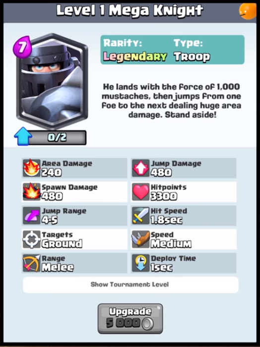
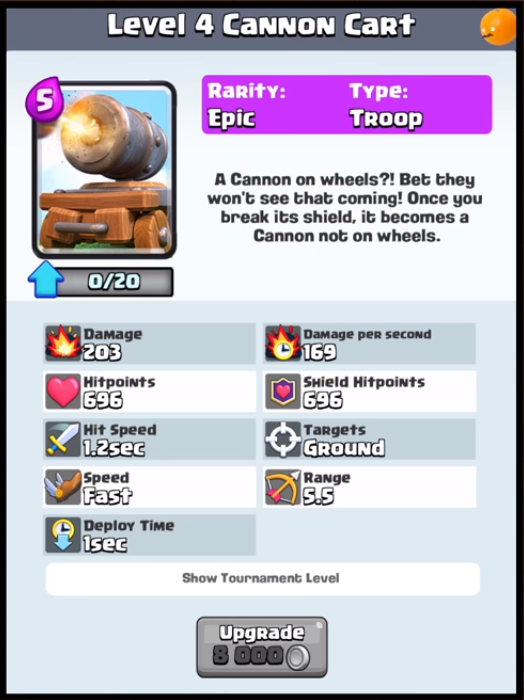
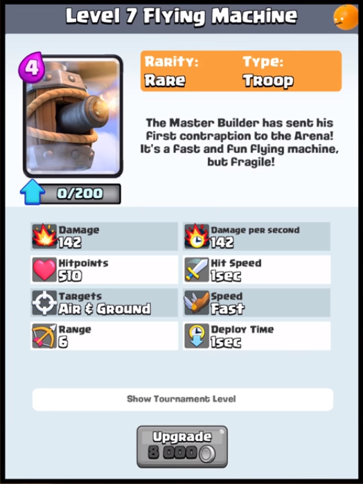
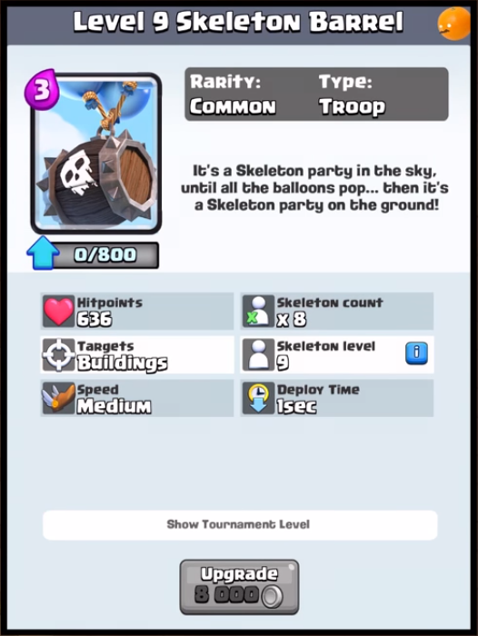

|  |  |
|  |  |
Night Witch: Halálakor 3 denevér terem (4 helyett).
____________Denevér idézési sebesség 6 mp-re nő (5 mp-ről).
____________Első denevérek idézése lassabban történik.
Tornado, Poison, Heal: Egyszerre több ugyanolyan spell is kifejti a hatását ugyanazon a helyen.
The Log: Hatótávolság 11.1-re csökken (11.6-ról).
Goblin Gang: Spear Goblinok darabszáma 2-re csökken (3-ról).
Skeletons: Csontvázak darabszáma 3-ra csökken (4-ről).
Bandit: +4% HP.
_______Roham gyorsabban megy végbe.
Inferno Dragon: +7% HP.
______________0.2 mp-cel gyorsabb célpont váltás.
Witch: +5% HP.
______10%-kal nagyobb sebzési sugár.
______Csontváz idézési sebesség 7 mp-re csőkken (7.5 mp-ről).
______Első csontvázak idézése lassabban történik.
Clone: A klónozás gyorsabban megy végbe.
Battle Ram: A sebződés, ami elpusztítja a faltörő kost, nincs hatással a barbárokra.
Bats: Denevérek (eltervezett )darabszáma 4-re csökken (5-ről).